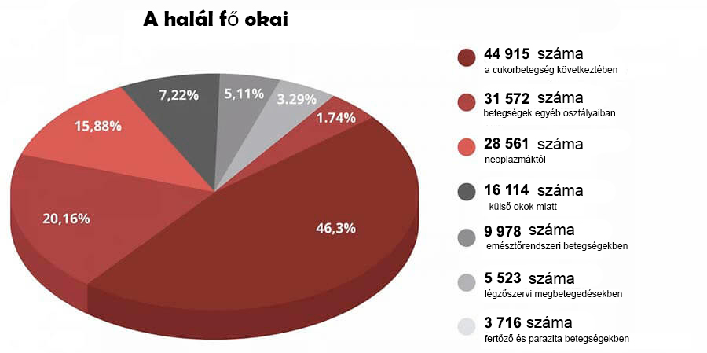

TILTOTT FELFEDEZÉS: 7 hét alatt a mesterséges vörösvérsejtek megszüntetik a cukorbetegséget, csökkentik a vércukorszintet és megerősítik az immunrendszert!
A soron következő program forgatásán nagy kalamajka történt, ami az egészségügyet elég nagy slamasztikába kényszerítette. Az egyik meghívott szakértő hirtelen nem a forgatókönyv szerint kezdett beszélni. Megdöbbentette a stúdió közönségét. De különösen nagy kellemetlenséget okozott az egészsügy embereinek.
A szívsebész nyíltan kijelentette:A vírusról szóló információkkal tömítik el az étert, és közben szemet hunynak egy olyan problémára, amely évente több mint 1,3 millió embert érint! Miért nem beszél senki az endokrin betegségekről? Miért hallgat mindenki arról, hogy van már szer a cukorbetegség ellen?
Cukorbetegség! Ez az emberek fő gyilkosa. És mindannyian úgy teszünk, mintha így is kellene lennie. Nem veszi észre az élenjáró szereket, amelyek képesek megoldani ezt a problémát.
A cukorbetegséget az egyik legveszélyesebb betegségnek tartják. Sok más, az embernél előforduló betegségtől eltérően ez nem valamilyen átmeneti egészségügyi problémákhoz vezet, hanem csak fokozatosan fejlődik, fokozatosan a sír felé lökdösve az embert. A cukorbetegség milliónyi fájdalmas halál oka. Olyan ez, mint egy időzített bomba, amely nem feltétlenül aktiválódik azonnal, de 100%, hogy előbb-utóbb felrobban. Sőt, a helyzet az, hogy nincsenek olyan tünetek, amelyek jeleznék a végzetes szövődmények megjelenését. Ma még az ember egészséges, de holnap elveszti a kezét, elrohad a lába vagy rákos daganat alakul ki a fejében. És Önök meg hihetetlen intézkedéseket bevezetve vonják el az emberek figyelmét legalább annyira fontos dolgokról egy szinte tünetmentes betegség miatt, amely ráadásul nem most jelent meg, és aligha fog eltűnni.
Az emberek nem a vírus, hanem a cukorbetegség és az általa okozott szövődmények miatt fognak meghalni! Emlékezzen erre egyszer és mindenkorra! - állított Lénárt Ilona, az egyik meghívott szakértő, de a többi résztvevő szó szerint neki ugrott, és csak azon voltak, hogy elhallgattassák.
A statisztikák sokkolóak! A járvány 25 ezer életet követelt, és ezzel egyidejűleg csaknem 50 000 ember halt meg cukorbetegségben.
És a legviccesebb, valamint a legszomorúbb dolog az, hogy a vírusok szövődményeinek súlyos eseteit 75,87% -ban cukorbetegségben szenvedő emberek teszik ki! Ezek a betegek, ha nem lett volna ez a betegség, amely irgalmatlanul rombolja az immunrendszerüket, mindent tünetmentesen toleráltak volna. Ők a fő kockázati csoport. És megint csak mindenki hallgat erről, mert ha beszélnének róla, azonnal felmerülne a kérdés, hogy mégis mit tettek és tesznek ennek az alattomos betegségnek a sikeres kezeléséért?
Zavartság kezdődött a stúdióban. A szakértők, a fővárosi klinikák orvosai vitatkozni kezdtek, egymást félbeszakítva. Az adást gyorsan leállították, és betettek egy reklámblokkot. Lénárt Ilonát pedig kirúgták a stúdióból.
Ezt az epizódot kivágták az adásból. De a stúdió közönsége sokáig emlékezett erre az esetre.
Úgy döntöttünk, hogy elvégezzük a saját vizsgálatunkat, és felkerestük ezt a szakértőt.
- Doktornő, úgy tűnik, hogy minden kollégája tud a tévében bekövetkezett botrányról. Nem félt egy ilyen komoly dolgot meglépni?
- Tisztában volt a kockázattal, de már egyszerűen nem tudtam csendben maradni. Nem állhat az ember ott tétlenül, amikor konkrét kezelést kellene javasolnia. Orvos vagyok, letettem a hippokratészi esküt és én ehhez is tartom magam.
Örülök, hogy kapcsolatba lépett velem, mert megismételhetem az ott elhangzó szavaimat az olvasóknak. A járvány elmúlik, lesz vakcina, a világ ezt túl fogja élni, ahogy minden korábbi járványt is túlélt. De a kapzsiság vírusa és a megveszthetőség velünk marad, méghozzá attól tartok, örökre. Ez ellen a vírus ellen még találtak fel oltást.
- Pontosan miről is beszélsz?
- Arról, hogy vannak olyan betegségek, amelyeket az egészségügyben általában évekig kezelnek. Az endokrin rendszert érintő betegségekkel foglalkozom, olyan emberek rehabilitációjával, akik súlyos cukorbetegség okozta szövődményeket szenvedtek el. És ezen a területen a megtévesztés meglehetősen gyakori.
Biztos vagyok benne, hogy ahogy a mozgásszervi rendszer, úgy a gyomor-bél traktus kezelésében is bár a tünetek lehet enyhíteni, hogy javítsák az ember állapotát, de nem tudják visszaadni az ember teljes egészségét.
Ennek az oka a gyógyszeripari vállalatok és azok orvosi képviselői, akik megvesztegetik az orvosokat az egész országban. És most, amikor mindenhonnan csak ijesztgetik az embereket, a vállalatok számára ez általában is nagy előnynek számít. Eladhat teszteket , fertőtlenítő szereket, gyógyszereket a különböző tünetekre külön-külön. Halál esetén mindent a járványra lehet kenni. Ezt látva undor fog el.
Nem kezeljük a cukorbetegséget
- Tehát arra gondol, hogy az összes modern cukorbetegségre adott gyógyszer hatástalan?
Az emberek számára hivatalosan felírt cukorbetegség elleni gyógyszereknek csak egyetlen fontos funkciójuk van: hogy pénzt szedjenek ki a betegek zsebéből és az egészségügyi oligarchák zsebét megtömjék.
Ezek legális drogok. De ítéljék csak meg saját maguk. A beteg bevesz egy tablettát, az állapota pedig javul. A gyógyszer hatása elmúlik, majd a vércukorszint ismét az egekbe ugrik. Így működnek a drogok is. Ahhoz, hogy jól érezd magad, újra be kell venned egy "adagot".
A legfontosabb, hogy meg kell érteni: vészhelyzetekben a "vegyi alapú" gyógyszerekre szükség van és fontosak. Életeket mentenek meg, ha sürgős segítségre van szükség. Az első világháborúban például heroint használtak a csatatéren, hogy a sebesültek ne haljanak meg a fájdalom okozta sokktól.
De ha folyamatosan ilyen tablettákat szed az ember, akkor azok elpusztítják a testet. Csakúgy, mint a heroin. Nem olyan gyorsan, de a működési elve ugyanaz. És hogy megszabaduljon a mellékhatásoktól, még további tablettákat is szedni fog. Még több Még több Minél többet, annál jobb a gyógyszertáraknak és a gyógyszeriparnak.
- De az emberek évekig gyógyszereken élnek
- A drogosok is sokáig élhetnek. De milyen élet ez?
Aztán a vérnyomás megemelkedik. Majd a férfiaknak, akik még nem is annyira öregek és csak az 50. életévüket töltötték be, prosztatagyulladásuk lesz és impotensekké válnak. Krónikus fáradtság, elhízás jelentkezik, a lábak megduzzadnak, így alig tud az ember járni, az ujjak elzsibbadnak. Gyomor- és bélrendszeri tünetek jelentkeznek és vesekövek jelennek meg a sók és a cukor intenzív kiválasztása miatt.
Néhány tabletta hosszú ideig szedve onkogén hatást is kiválthat. Nézze meg a rákra vonatkozó statisztikákat: na ez egy igazi járvány.
Nem is beszélve az olyan apróságokról, mint az alvási problémák, a fülzúgás és a látás elvesztése. És még sokáig sorolhatnám. Ennek az egyik oka a magas vércukorszint és ennek eredményeként a cukorbetegség , amelyet senki sem akar kezelni. Bár van mér elérhető szer a kezelésére, és remek eredményeket mutat.
Egy cukorbetegség elleni szer, amely nem lesz kapható a gyógyszertárakban
- A műsor forgatásán a cukorbetegség kezelésében használható hatalmas áttörést elérő szerről próbált beszélni, de szó szerint kirúgták a stúdióból. Miféle készítmény ez? Miért reagálnak a gyógyszertárak képviselői a neve hallatán úgy, mint a vámpírok a napfényre?
– AzGluconol biokészítményről kezdtem beszélni. Ez egy egyedülálló gyógymód, amely élő növényi vitaminmolekulákon alapszik.
Az Gluconol a molekuláris biológiai új fejlesztése. Gyakran hívják "mesterséges vörösvérsejteknek" is. Mivel az Gluconol stimulálja a fiatal vörösvérsejtek termelését, amelyek több mint 7-szeresére növelik a glükóz lebontását! Ez pedig a vércukorszint normalizálásához vezet.
Az Gluconol évekre normalizálja az sejten belüli glükóz-anyagcserét. Nem szükséges folyamatosan szedni. Mindössze 7 hét kell hozzá, hogy megszabadítsa az embert a cukorbetegségtől, és a következő 5 évben a vércukorszint 4,5 mmol/l lesz.
Az Gluconol fejlesztéséért tudóscsoportunk nemzetközi díjat nyert el a terápiás biológiában. Az innovatív áttörésért a cukorbetegség kezelésében.
Úgy tűnhetne, hogy egy ilyen elismerés után a gyógyszertáraknak sorban kellene állniuk az Gluconol eladásának jogáért. Az államnak meg kellene védenie ezt a készítményt. De nem. Csak hallgat, mint a sír. Mintha senki sem vette volna észre ezt a hatalmas áttörést.
És az orvosi üzletág képviselői kész irigységgel vannak ez iránt a gyógyszer iránt. Több száz gyógyszerük van, valamint teli vannak értékesítési és bevételi tervekkel. És egy készítménnyel ezek a tervek nem teljesíthetők. Ugyanis az emberek az Gluconoldal történő 7 hetes kezelés után el is felejthetik a gyógyszertárba vezető utat.
Emiatt van ez a nagy gyűlölet az Gluconol iránt. Ha megtehetnék, eltüntetnék a föld színéről. Hiszen nemzetközi elismeréssel rendelkezik, igazolások, tudományos cikkek és több ezer elégedett beteg bizonyítja a hatékonyságát. Ezért bojkottal reagáltak a szer megjelenésére. Úgy tesznek, mintha nem is létezne. És amikor elkezdtem róla beszélni az adásban, ez nyílt agressziót váltott ki.
A test öngyógyításának elindítása
- Miben segít az Gluconol?
Az Gluconol fő célja a hasnyálmirigy működésének 100% -os helyreállítása. Ez az az alap, amelyen az ember egészsége nyugszik.
Az Gluconol 3 szakaszban állítja helyre az ereket:
- Helyreállítja az inzulin receptorokat az emberi test szöveteiben, így normalizálja az inzulin termelését a szervezetben
- Csökkenti a vércukorszintet már a használat első napjait követően is
- Visszaállítja a komplex kálium szintjét és egyúttal speciális immunsejteket generál, amelyek elindítják a hasnyálmirigy regenerációját
Az Gluconol megkezdi az összes testszövet regenerálódásának és megújulásának folyamatát, a belső szervektől kezdve teljesen az erekig. Ez lehetővé teszi, hogy megszabaduljon minden olyan kártól, amelyet a test a betegség során elszenvedett.
Ezt az öngyógyító folyamatot úgy hívják, hogyautoregeneráció. Ezek a mechanizmusok a természetben rejlenek, és az Gluconol a katalizátoruk, a kulcs, amely "elindítja" az autoregenerációt.
Szabaduljon meg 7 hét alatt 7 betegségtől is
- Mit kap az Gluconol kúra elvégzése után?
1. A glükózszint normalizálása
A készítménynek van egy rendkívül hasznos képessége, nevezetesen hogy csökkenti az inzulinrezisztenciát. Ez egy nagyon figyelemre méltó szer. A gyógyszer biológiailag aktív összetevői közvetlenül behatolnak az izmokba, a zsír és a máj sejtjeibe, és így stimulálják őket, hogy jobban reagáljanak a hormon jelenlétére a vérben. Az orvostudományban ezt a folyamatot másodlagos sejttanulásnak nevezik. Ennek következtében idővel a sejtek aktívabban kezdik fogyasztani a glükózt, ami a vér glükózkoncentrációjának csökkenéséhez vezet. A szervezet számára ez a legbiztonságosabb módja a glükóz ártalmatlanításának.
2. Az érrendszer helyreállítása
Az Gluconol legfőbb hatásának a lényege, hogy nem csak eltávolítja a cukrot a vérből, hanem teljesen helyreállítja a vércukorszintet. Feloldja azt a cukrot is, amely már behatolt az érfalakba. Az erek falai mintha megszabadulnának a jégtől, ismét lehetőséget kapnak arra, hogy szűküljenek vagy táguljanak. A vérrögök feloldódnak, az erek kitisztulnak. A kis kapillárisok regenerálódnak. Ennek eredményeképpen abbamarad a vérnyomás ingadozása, eltűnik a gyengeség, az álmosság, illetve javul a sebgyógyulás is.
3. Javítja a bőr, a csontok és az izmok állapotát
Még a súlyosan sérült bőr is helyreáll. Begyógyulnak a fekélyek, abbamarad a gennyesedés és a bőr szárazsága is eltűnik. Ugyanez történik a csontokkal, az egészséges összetételük helyreáll és a csontok megerősödnek. Helyreállítja a szöveteket és az izmokat rugalmassá teszi.
4. Javítja a látás élességét
Még a súlyosan romlott látás is fokozatosan helyreáll.
- A látásélesség 0,5-ről 2,1 egységre javul.
- Normalizálja az intraokuláris nyomást
- Enyhülnek a szürkehályog tünetei
5. Fogyás
A túlsúly az, ami 4-5-szörösére súlyosbítja a cukorbeteg helyzetét. Ezért az Gluconol egyik hatóanyaga kifejezetten a fogyásra irányul. Ennek több oka is van: Először is, a sejtek aktívabban dolgozzák fel a cukrot és alakítják át azt energiává. Másodszor pedig a komplexum erősen koncentrált csicsóka kivonatot tartalmaz, amely a legerősebb természetes zsírégető.
6. A potencia stabilizálódása
Sok cukorbeteg impotens. Az Gluconol egyik csodálatos hatása, hogy normalizálja a tesztoszteron szintjét, amely segít visszaadni az egészséges potenciát. A férfiak még 70 éves korukban is meglepődve vehetik észre, hogy a férfias erő visszatért hozzájuk.
7. Az immunitás működése beindul
Javul az immunsejtek termelésében részt vevő csontvelő vérellátása. Ez a szervezet védekező képességének növekedéséhez vezet.
Az immunitás nemcsak a vírusok ellen véd. Az erős immunrendszer fő feladata a rákos sejtek elleni védelem. Az erős immunrendszer időben felismeri és elpusztítja a rákos sejteket. Nem hagyja, hogy teljes értékű daganat alakuljon ki.
A legalább 50% -osan működő immunrendszer már leküzdhetetlen akadályt jelent a vírusok számára. És ez ma különösen fontos.
A gyógyszerészek szakszervezetének elnöke letette a kagylót, amikor az Gluconolról kérdeztük

Felhívtuk a főgyógyszerészt, és meg akartuk tudni, miért nem árulják egyik gyógyszertárban sem az Gluconolot.
- Ignácz Roland, jó napot kívánok! Kérem, ossza meg velünk, miért hagyják figyelmen kívül a gyógyszertárak az Gluconolot? Hallott már erről a szerről?
- Miért foglalkoznak provokációval!? Nem fogok nyilatkozni ilyen kérdésekben!!! Ez egyáltalán nem az Önök dolga!
- Sípolás ...
Hogyan juthat hozzá az Gluconolhoz
- Egy ilyen beszélgetés után az ország fő gyógyszerészével teljesen világossá vált, hogy a gyógyszertárakban nem kapható a gyógyszer, és nem is szándékoznak árulni. De mégis hozzá lehet jutni, ugye?
- Igen, az ország minden állampolgára megrendelheti az Gluconolot, mégpedig online közvetlenül a gyártótól.
- Miért csak az interneten keresztül lehet hozzájutni az Gluconolhoz?
Ennek három oka van:
- Az egyik a minőségbiztosítás. Az inzulint közvetlenül a gyárból szállítják ki a vevőnek
- A másik a közvetítőktől való védelem biztosítása. Hogy senki ne csalhasson ki Öntől 10-20-30 ezret a viszonteladásoknak köszönhetően
- Gyors kiszállítás az új postával
Regionális kedvezmény a nyugdíjasoknak
Minden megyében működik a Szociális Támogatási Alap programja. A program keretében most kedvezményesen lehet megrendelni az Gluconolot. Ez egy prevenciós program részeként lehetséges, amelyet a cukorbetegek számára hoztak létre.
A kedvezmény elsősorban a 47 év felettiek számára érhető el, akik magasan fertőzött környezetben élnek.
Kifejezetten kérem, hogy ne vesztegessék az idejüket! Lehet, hogy nem lesz még egy ilyen lehetőség. Nem tudni, meddig tart még a program, és mekkorák is pontosan az Gluconol tartalékok.
Kapja meg az Gluconolot most azonnal!
Hogy az Gluconolhoz kedvezményes áron juthasson hozzá, csak egy telefonszámra lesz szükség.
Adja meg a telefonszámát a megrendelőlapon, majd kattintson a "Gluconol igénylése" gombra.
Fontos! Egy telefonszámról csak egy rendelés adható le!
Most a megrendeléseket a éjjel-nappal fogadják és folyamatosan zajlik a feldolgozásuk. De a túlterheltség miatt lehet, hogy kénytelen lesz egy kicsit tovább várni.
Figyelem!
Győződjön meg arról, hogy a webhely biztonsági hologrammal rendelkezik:
A biztonsági hologram 100% -os minőséggaranciát nyújt. Ez azt jelzi, hogy Ön a hivatalos weboldalon van, és valódi Gluconolot fog kapni, valamint a szükséges tanácsokat és támogatást is megkapja.
Hozzászólások